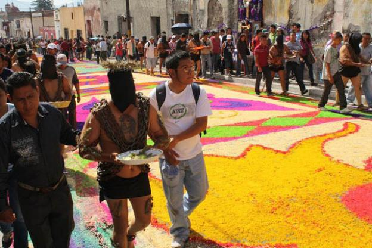

Una de las procesiones de Viernes Santo que más acapara la atención es la registrada en Atlixco con la presencia de los Engrillados, personas que encadenadas recorren las calles de referido municipio, las cuales portan coronas de espinas, así como púas o puntas que se colocan en distintas partes del cuerpo, principalmente en hombros y pies.

Se puede observar gente disfrzada par a la representacion

A los Engrillados

Y el tapete monumental que se hace en el Zócalo de la ciudad
La cuidad se convierte en una iglesia: sus lados flanqueados por centenarios templos barrocos y por bóveda un gran cielo limpio y estrellado que ilumina el recorrido y acoge a los fervientes espectadores.

El principal motivo de esta manifestación de fe es la pasión y muerte de cristo, a través de un Vía Crucis y los misterios Dolorosos del Rosario. Cuadro representa con una imagen llevada en pesadas plataformas de madera por los cofrades, que portan vestimentas con colores alusivos a la parroquia que pertenecen.
En este este Pueblo Mágico guerrerense se llevan a cabo procesiones en las cuales sus habitantes dan muestra de su fe a través de sacrificios simbólicos, y hasta físicos, para expiar alguna culpa o simplemente para ofrendar su sufrimiento a quien consideran su salvador. Por las calles empedradas desfilan las dramáticas procesiones acompañadas por imágenes religiosas que testifican el sacrificio de penitentes encapuchados, vestidos de negro que arrastran cadenas sujetas a sus tobillos a manera de sacrificio.
El Primer Viernes de Cuaresma la Festividad del Señor de Las Misericordias en el Templo de San Juan de Dios, el Segundo Viernes de Cuaresma la Festividad del Señor de Las Maravillas en el Templo de La Defensa , el Cuarto Viernes de Cuaresma la Festividad de la Samaritana en la Ciudad de Oaxaca, el Quinto Viernes de Cuaresma la festividad del Señor de las Peñas en el Templo del Carmen Alto y la Festividad del Señor San Lázaro en la Villa de San Antonino Castillo Velasco.

Es una procesión de carácter luctuoso en el cual se le da el pésame a la Virgen Morena. Su característica principal es que tantos los participantes como los espectadores mantienen silencio al paso de las imágenes de la procesión. Así se demuestra el respeto a la muerte de Jesús. La procesión pasa por las calles muy importantes de la ciudad: Andador Turístico, Xolotl, García Vigil, Morelos y termina en la iglesia de la Sangre de Cristo, todo el recorrido es hecho con un orden programado.